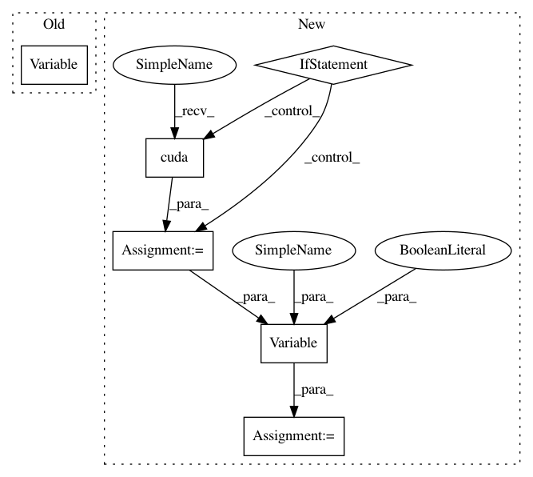

960518e2734a42f7da19dc3d4d49501004c037e1,mnist/main.py,,train,#Any#,65
Before Change
optimizer = optim.SGD(model, lr=1e-2, momentum=0.9)
def train(epoch):
batch_data = Variable(torch.cuda.FloatTensor(BATCH_SIZE, 1, 28, 28), requires_grad=False)
batch_targets = Variable(torch.cuda.FloatTensor(BATCH_SIZE), requires_grad=False)
for i in range(0, training_data.size(0), BATCH_SIZE):
batch_data.data[:] = training_data[i:i+BATCH_SIZE]
batch_targets.data[:] = training_labels[i:i+BATCH_SIZE]
After Change
def train(epoch):
batch_data_t = torch.FloatTensor(BATCH_SIZE, 1, 28, 28)
batch_targets_t = torch.LongTensor(BATCH_SIZE)
if cuda:
batch_data_t = batch_data_t.cuda()
batch_targets_t = batch_targets_t.cuda()
batch_data = Variable(batch_data_t, requires_grad=False)
batch_targets = Variable(batch_targets_t, requires_grad=False)
for i in range(0, training_data.size(0), BATCH_SIZE):
batch_data.data[:] = training_data[i:i+BATCH_SIZE]
batch_targets.data[:] = training_labels[i:i+BATCH_SIZE]
In pattern: SUPERPATTERN
Frequency: 4
Non-data size: 6
Instances
Project Name: OpenNMT/OpenNMT-py
Commit Name: 960518e2734a42f7da19dc3d4d49501004c037e1
Time: 2016-09-25
Author: cfarabet@twitter.com
File Name: mnist/main.py
Class Name:
Method Name: train
Project Name: OpenNMT/OpenNMT-py
Commit Name: b87368e1e7fd832b505db9cc08015ac7af8f95de
Time: 2016-12-23
Author: jvanamersfoort@twitter.com
File Name: VAE/main.py
Class Name:
Method Name: train
Project Name: OpenNMT/OpenNMT-py
Commit Name: 960518e2734a42f7da19dc3d4d49501004c037e1
Time: 2016-09-25
Author: cfarabet@twitter.com
File Name: mnist/main.py
Class Name:
Method Name: test
Project Name: OpenNMT/OpenNMT-py
Commit Name: b87368e1e7fd832b505db9cc08015ac7af8f95de
Time: 2016-12-23
Author: jvanamersfoort@twitter.com
File Name: VAE/main.py
Class Name:
Method Name: test